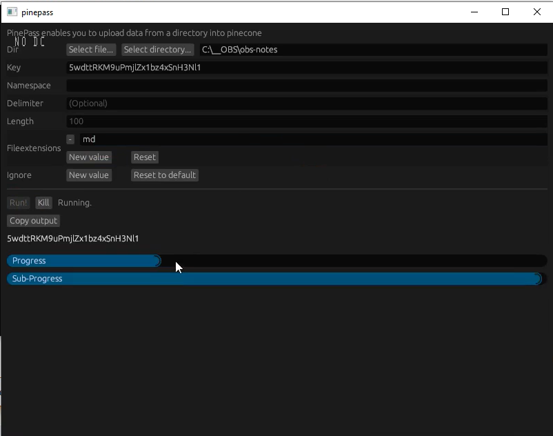

OpenNote AI
A project I made when ChatGPT was starting to get popular. I wanted to connect ChatGPT to my notes, so I enabled it to do so by creating a website that wrapped ChatGPT that allowed the AI to make queires for note information, which my backend then semantically searched for using vector embeddings in pinecone. I also developed an executable that would allow users to upload their notes to PineconeDB.
Embeddings:
I first need to take the users notes, and store them as embeddings that I could then search for using semantic search, so that ChatGPT could find them. In order to do that, I decided to make a Rust based application for my users. The first step was to create a Rust crate around the Pinecone HTTP Api, which I did. I focused a lot on designing this properly. I've attached some example code below. You can find the project HERE
The executable was a little simpler, but I did decide to overcomplicate it by using far too much async await and "optimization". This optimization probably made it slower to be honest, but here's an image.
Backend:
Since the websites users needed to login, and I needed to connect to ChatGPT, I decided to make a backend server in Go that would handle streaming tokens, querying Pinecone for embeddings based on ChatGPT's query, and user sessions / logging in. This can be found HERE
Website:
I also design the website myself. The code for the website is HERE